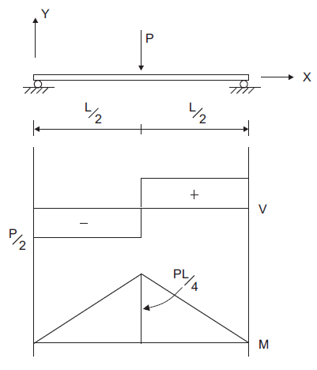
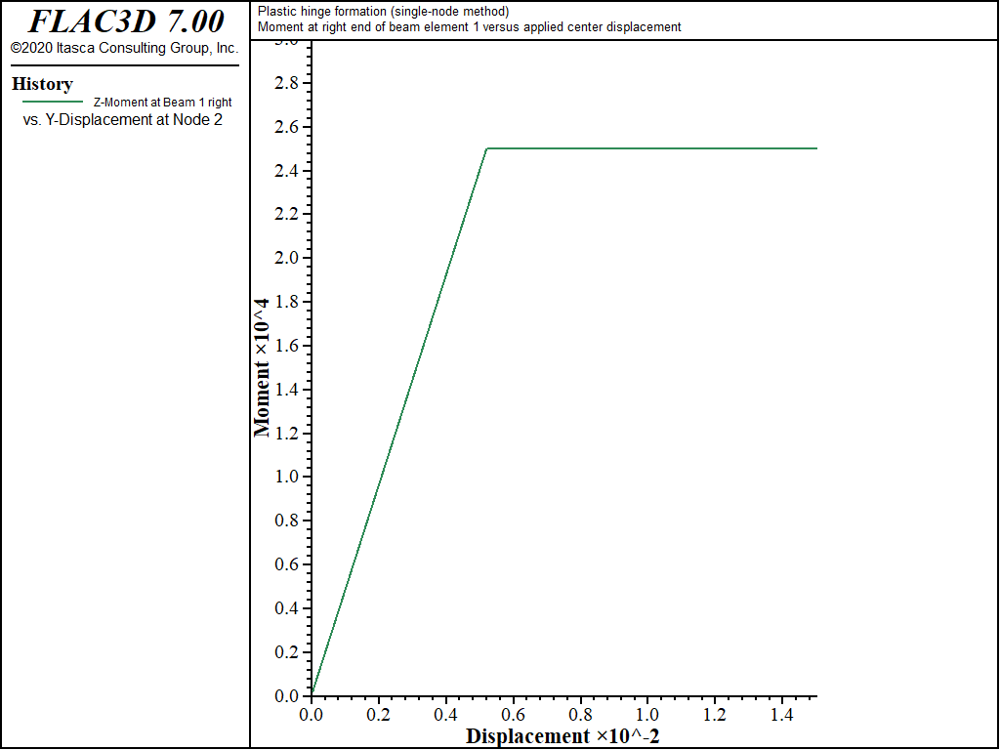
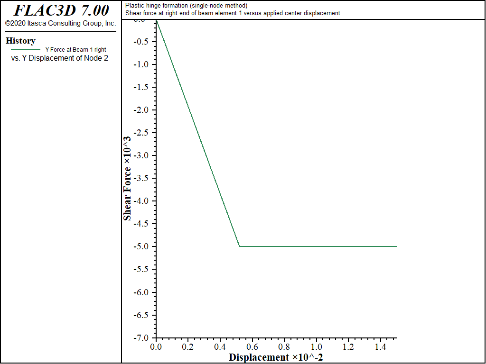
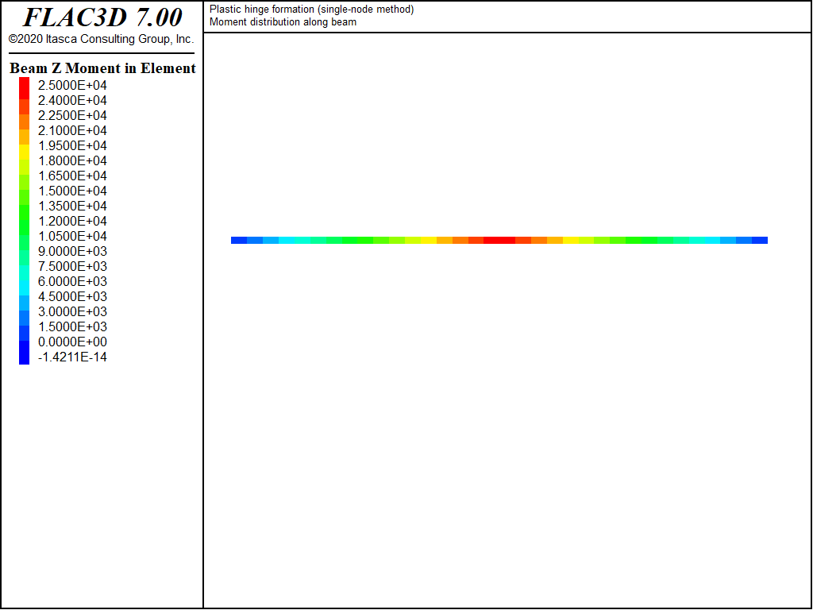
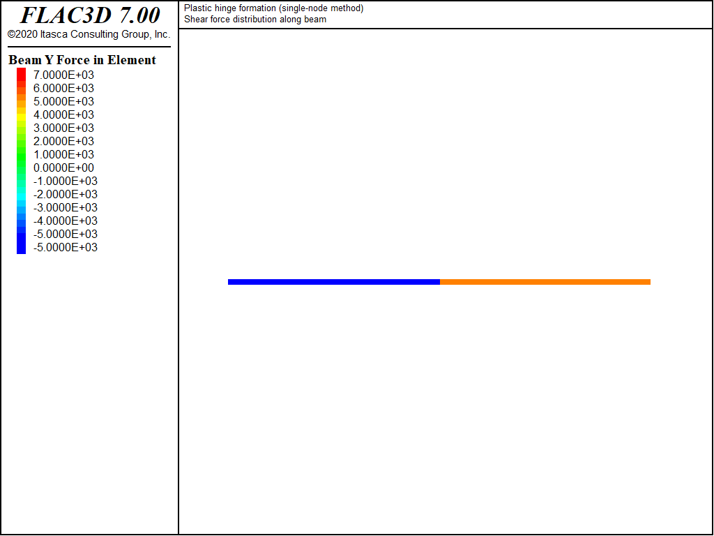
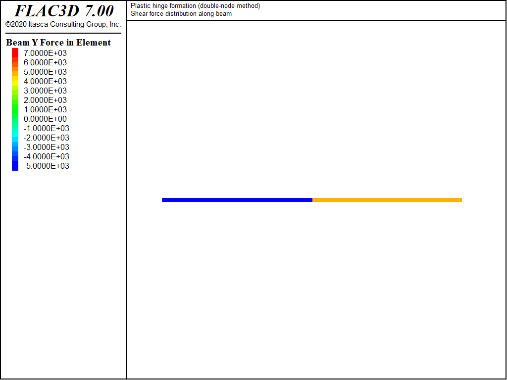
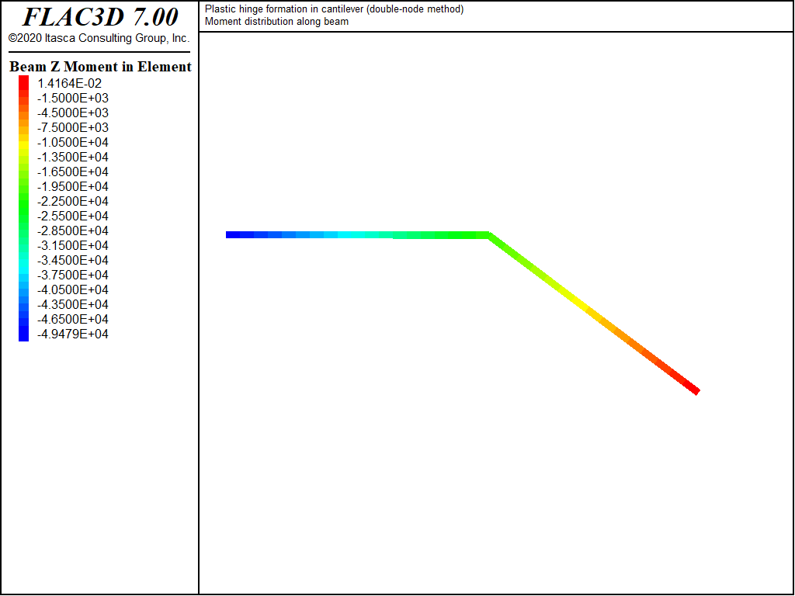

梁结构中塑性铰的形成
问题描述
注意
要在 FLAC3D 中查看该项目，请使用菜单命令 。选择 “Structure/Beam/PlasticHinge” 并选中 “PlasticHinge.f3prj” 载入。所用 主数据文件（main data files） 示于本例末尾。其余数据文件可在该项目中找到。
本例演示两种方法（称为单节点法与双节点法），用 FLAC3D 计算梁中塑性铰的起始与后续行为。单节点法指定构成该梁的各单元所能承受的极限塑性弯矩，做法是用 结构梁单元属性塑性弯矩（structure beam property plastic-moment） 命令指定所需的塑性弯矩承载力。用该方法可在梁单元之间形成假想铰；但由于这些单元以单个节点相连，这些位置无法产生真正的转动不连续。双节点法在每个潜在铰位置创建双节点，然后适当地把它们连接起来。双节点允许在达到极限塑性弯矩时出现转动不连续。双节点法应用来计算结构的大应变后破坏行为。若只需确定极限塑性弯矩处的解，则单节点法足够。以下讨论先定义示例问题，然后用单节点法与双节点法分别求解。
单节点
在长 10 m、塑性弯矩承载力 \(M^P\) 为 25 kN-m 的简支梁中心施加竖向集中荷载 \(P\)。体系及剪力图与弯矩图示于 图 1（Figure 1）。由这些图可知，所给塑性弯矩承载力对应最大竖向荷载 10 kN 与最大剪力 5 kN。若对梁中心施加常竖向速度，则预期力矩与剪力的限值分别为 25 kN-m 与 5 kN。

图 1：承受单个集中荷载的单根梁。
演示单节点法的 FLAC3D 模型（见 “PlasticHinge-Single.dat”）通过发出单条 structure beam create 命令并指定两段创建。这产生含 2 个单元与 3 个节点的模型，两个单元共享中心节点（节点 ID 为 3）。梁被赋予与 集中荷载（Concentrated Loads） 示例相同的性质，但另外用 结构梁单元属性塑性弯矩（structure beam property plastic-moment） 命令把塑性弯矩承载力设为 25 kN-m。通过限制 \(y\) 方向平动在梁端指定简支。对中心节点施加常竖向速度，并在计算中监测作用于单元 1 右端的力矩与剪力，以确定何时达到限值。注意我们为该问题指定组合局部阻尼（结构组合局部阻尼（structure damping combined-local）），以消除系统被常运动驱动时默认局部阻尼方案可能产生的振荡。
我们发现力矩与剪力的限值分别等于解析值 25 kN-m 与 5 kN（见 图 2（Figure 2） 与 图 3（Figure 3））。此外力矩与剪力分布与解析解一致（见 图 4（Figure 4） 与 图 5（Figure 5））。我们还看到中心位置未发展出转动不连续；中心节点的转角为零（结构节点列表位移（structure node list displacement））。


图 2：单元 1 右端力矩对施加的中心位移（单节点法）。


图 3：单元 1 右端剪力对施加的中心位移（单节点法）。


图 4：极限状态下的力矩分布（单节点法）。


图 5：极限状态下的剪力分布（单节点法）。
双节点
演示双节点法的 FLAC3D 模型（见 “PlasticHinge-Double.dat”）通过发出两条独立的 structure beam create 命令创建。这产生含两个单元与四个节点的模型。从左到右，左单元使用节点 1 与 2，右单元使用节点 3 与 4。注意节点 2 与 3 位于同一位置，但它们之间不会相互作用。现在用以下命令在节点 2 与 3 之间创建适当的连接
struct node join
struct link attach rotation-z=normal-yield
struct link property rotation-z area=1.0 stiffness=6.4e8 yield-compression=25e3 yield-tension=25e3
第一条命令创建从节点 2 到节点 3 的节点-节点连接。第二条命令把 \(z\) 转动方向上的默认附着条件由刚性改为可变形。第三条命令按下述方式设置该法向屈服弹簧的性质：把面积设为一，并把抗压与抗拉屈服强度都设为所需的 25 kN-m 塑性弯矩承载力。最后把弹簧刚度设为足够大的值，使弹簧变形相对梁变形很小。该值通过计算使用该弹簧的两个单元的转动刚度（每个转动刚度为 \(4EI/L\)，其中 \(L\) 为单元长度）并把该值乘以 10 确定。
双节点已适当互连后，梁被赋予与 集中荷载（Concentrated Loads） 示例相同的性质——我们不指定塑性弯矩承载力，因为希望塑性弯矩在法向屈服弹簧中发展。通过限制 \(y\) 方向平动在梁端指定简支。对中心节点施加常竖向速度（刚性附着条件节点的所施速度被忽略），并在计算中监测作用于单元 1 右端的力矩与剪力，以确定何时达到限值。注意我们为该问题指定组合局部阻尼（结构组合局部阻尼（structure damping combined-local）），以消除系统被常运动驱动时默认局部阻尼方案可能产生的振荡。
我们发现力矩与剪力的限值分别等于解析值 25 kN-m 与 5 kN（见 图 6（Figure 6） 与 图 7（Figure 7））。此外力矩与剪力分布与解析解一致（见 图 8（Figure 8） 与 图 9（Figure 9））。我们还看到中心位置已发展出转动不连续；节点 2 与 3 的转角不为零且大小相等、方向相反（结构节点列表位移（structure node list displacement））。



图 9：极限状态下的剪力分布（双节点法）。
双节点悬臂梁
这两个示例表明，单节点法与双节点法在极限弯矩附近给出相同行为；但若以更大应变方式继续加载该结构，双节点法将给出更合理的结果，因为它允许中心处转动发展出不连续。我们通过把双节点示例改为悬臂梁（左端固定）并在自由端施加竖向荷载来说明该行为（见 “PlasticHinge-Cantilever.dat”）。该问题在大应变模式下运行，荷载被指定为在整个模拟过程中保持沿负 \(y\) 方向。
最终结构形态与弯矩分布示于 图 10（Figure 10）。可以看到双节点法允许梁中心处的转动发展出不连续。


图 10：悬臂梁（双节点法）的最终结构形态与弯矩分布。
数据文件
PlasticHinge-Single.dat
model new
model large-strain off
model title "Plastic hinge formation (single-node method)"
; 创建梁并指定参数
struct beam create by-line (0,0,0) (10,0,0) segments=2
struct beam property young=2.0e11 poisson=0.30
struct beam property cross-sectional-area=6e-3 moi-z=200e-6 ...
moi-y=200e-6 moi-polar=0.0
struct beam property plastic-moment=25e3
; 指定边界条件
struct node fix velocity-z rotation-x rotation-y
; 约束所有非梁模态
struct node fix velocity-y range union position-x 0.0 position-x 10
; 左右两端采用简支
struct node fix velocity-y range position-x 5
; 向中央节点施加恒定竖向速度
struct node initialize velocity-y -5e-6 local range position-x 5
; 中央节点处
; 记录历程
struct node history name='disp' displacement-y position (5,0,0)
; 中央节点的 y 位移
struct beam history name='mom' moment-z end 2 position (2.5,0,0)
; 弯矩
struct beam history name='force' force-y end 2 position (2.5,0,0)
; 剪切力
; 设置阻尼并运行计算循环
struct mechanical damping combined-local
model cycle 3000 ; 总位移为 .015
model save 'Single'
PlasticHinge-Double.dat
; 塑性铰形成的数据文件，采用双节点法
model new
model large-strain off
model title "Plastic hinge formation (double-node method)"
; 创建梁
struct beam create by-line (0,0,0) (5,0,0) id=1 segments=1
struct beam create by-line (5,0,0) (10,0,0) id=2 segments=1
; 连接节点，并将 z 转动方向的连接设为塑性
struct node join
struct link attach rotation-z=normal-yield
struct link property rotation-z area=1.0 stiffness=6.4e8 ...
yield-compression=25e3 yield-tension=25e3
; 指定梁参数
struct beam property young=2.0e11 poisson=0.30
struct beam property cross-sectional-area=6e-3 moi-z=200e-6 ...
moi-y=200e-6 moi-polar=0.0
; 指定梁边界条件
struct node fix velocity-z rotation-x rotation-y
; 约束所有非梁模态
struct node fix velocity-y range union position-x 0.0 position-x 10
; 左右两端采用简支
; 向中央节点 node-3 施加恒定竖向速度 ---
; 必须向目标节点施加速度。
struct node fix velocity-y range position-x 5
; 向中央节点施加恒定竖向速度
struct node initialize velocity-y -5e-6 local range position-x 5
; 中央节点处
; 记录历程
struct node history name='disp' displacement-y position (5,0,0)
; 中央节点的 y 位移
struct beam history name='mom' moment-z end 2 position (2.5,0,0)
; 弯矩
struct beam history name='force' force-y end 2 position (2.5,0,0)
; 剪切力
; 设置阻尼并运行计算循环
struct mechanical damping combined-local
model cycle 3000 ; 总位移为 .015
model save 'Double'
PlasticHinge-Cantilever.dat
; 悬臂梁塑性铰形成的数据文件，采用双节点法
model new
model title "Plastic hinge formation in cantilever (double-node method)"
; 创建两根梁
struct beam create by-line (0,0,0) (5,0,0) id=1 segments=1
struct beam create by-line (5,0,0) (10,0,0) id=2 segments=1
; 连接节点，并将 z 转动方向的连接设为塑性
struct node join
struct link attach rotation-z=normal-yield
struct link property rotation-z area=1.0 stiffness=6.4e8 ...
yield-compression=25e3 yield-tension=25e3
; 指定梁参数
struct beam property young=2.0e11 poisson=0.30
struct beam property cross-sectional-area=6e-3 moi-z=200e-6 ...
moi-y=200e-6 moi-polar=0.0
; 指定边界条件
struct node fix velocity-z rotation-x rotation-y ; 约束所有非梁模态
struct node fix velocity rotation range position-x=0 ; 完全固定左端
struct node apply force=(0,-5.5e3,0) range position-x=10 ; 在端部施加力
; 指定阻尼并运行计算循环
struct mechanical damping combined-local
model large-strain on
model solve ratio-local 1e-4
model save 'Cantilever'
| 这些内容对您有帮助吗？… | FLAC3D © 2019, Itasca | 原文更新于 2020 年 10 月 8 日 |